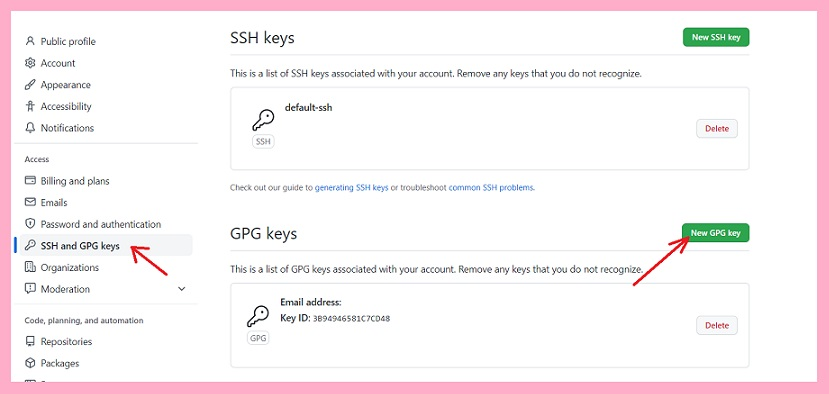

第一步：首先你得有一个 github 仓库（登录注册自己解决）
友情提供：Github 官网地址
注释：如果访问 github 失败，可以尝试打开 cmd 并输入ipconfig/flushdns
首先：进入 github 官网（登录注册自己解决，没难度） 新建仓库，点击 + ，如图：
这里最好将三个文件都选上，然后 Create repository 即可。
第二步：将 Github 仓库导入到 Gitee（登录注册自己解决）
友情提供：Gitee 官网地址
同样地，进入 gitee 官网，点击 +，如图：
同意链接 Github 账号后，点击导入 Github 仓库，选择刚才创建的仓库，点击导入即可。
第三步：下载 git
下载 git 并安装。友情提供：Git 官网下载地址
准备一个空的文件夹并打开。
右键，点击 Git Bash Here打开 git（Windows 11 右键后需先点击 “显示更多选项”）
输入以下代码。这里的邮箱请换成你注册 github 使用的邮箱。
$ git config --global user.name 你的名字 $ git config --global user.email 你的邮箱地址
复制 Github 中打开刚刚创建的仓库的链接，在 git 输入以下代码。
$ git clone https://仓库链接.git检查本地，发现 github 上的内容已经下载到本地了。
第四步：创建 GPG 密钥
首先检查 GPG 版本。如图（划线部分）：
如果 GPG 版本在2.1.17以上，就用下面的命令：
$ gpg --full-generate-key否则用下面的命令：
$ gpg --default-new-key-algo rsa4096 --gen-key根据提示创建。红色方框指出的就是密钥 id。请记住这个密钥 id。如图：
然后输入以下命令。红框中的密钥 id 改为刚才的密钥 id。
$ gpg --armor --export 密钥id $ git config --global user.signingkey 密钥id $ git config --global commit.gpgsign true
将从 -----BEGIN PGP PUBLIC KEY BLOCK-----到-----END PGP PUBLIC KEY BLOCK-----中的内容复制到剪切板。
第五步：上传 GPG 密钥
回到 Github 界面。右上角头像点击 Settings。
点击 SSH and GPG keys -> New GPG Key。将刚才复制到剪切板的内容黏贴入框中。点击 Add GPG key，输入密码，可看到 GPG key 已添加至 Github 界面。

前往 Gitee 界面。右上角点击 设置。在左边的安全设置中找到 GPG 公钥一栏，将剪切板内容黏贴入框中，点击确定，输入密码，可看到 GPG key 已添加至 Gitee 界面。
第六步：上传仓库
本地打开刚刚克隆的库，找到.git文件夹点开。（若找不到请设置：显示隐藏的文件夹）
双击config文件，以 txt 文本文档格式打开。复制红色框内的这一行，并另起一行黏贴，将此行中的链接改为 gitee 中仓库的链接。
回到项目的目录（就是刚刚克隆到本地的项目的文件夹），将你的项目黏贴至此处。
右键，点击 Git Bash Here打开 git（Windows 11 右键后需先点击 “显示更多选项”）
输入以下代码。
$ git add . $ git commit -S'这里输入密钥id' -m'这里可随意输入内容，也可随意换行，是提交的相关信息备注。' $ git push
前往 Gitee 和 Github 查看，发现项目已经成功上传了，并标有已验证的字样。至此，项目的初次提交工作已全部完成。
结尾：二次提交
在项目文件夹中右键打开 git，输入以下内容。
$ git add . $ git commit -S'密钥id' -m'任意内容' $ git push
发现 Github 和 Gitee 均同步更新了。是不是很酷？